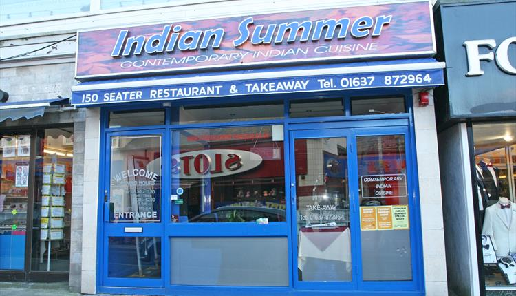

Indian Summer - Restaurant

Indian Summer
Indian Summer restaurant is located in the heart of Newquay town centre, a minute's walk from the beach. A unique setting within modern and contemporary surroundings combining both exceptional new Indian fare as well as your favourite traditional dishes.
At Indian Summer, we pride ourselves on our mouth-watering dishes created exclusively by our award winning chef using only the finest quality ingredients. We have a huge variety of special offers available to make dining out even cheaper – including a large selection of deals.
Road Directions
From the A30, take the A392 to Newquay until you reach Quintrell Downs roundabout (approx. 4 miles) take the second exit (straight on) heading towards Fistral Bay. Follow this road (still the A392) passing Hendra Caravan Park for 1 mile until you reach the Morrisons roundabout, take the first exit (straight on, Morrisons will be on your right), at the next roundabout take the second exit (right turn) still heading towards Fistral Bay. You are now entering Newquay, pass the Texaco garage on your right, at the next roundabout take the second exit (right turn).
Proceed along this road (Trevemper Road) passing the boating lake on your left. At the next twin mini roundabout take the first exit (left) and proceed up the hill (Trenance Road). Over the brow of the hill at the traffic lights turn left, this is Mount Wise and is now two-way. Proceed along Mount Wise taking the third turning on your right onto Marcus Hill. Drive down Marcus Hill, Newquay Meadery is on your right side, just after the right turn (Seymour Avenue) and opposite Newquay Tourist Information Centre.
Opening Times
2017 - Opening 1 Jan 2017 - 31 Dec 2017
Monday: 5.30pm - 11.30pm
Tuesday: 5.30pm - 11.30pm
Wednesday: 5.30pm - 11.30pm
Thursday: 5.30pm - 11.30pm
Friday: 5.30pm - 12am
Saturday: 5.30pm - 12am
Sunday: 5.30pm - 11.30pm
Map